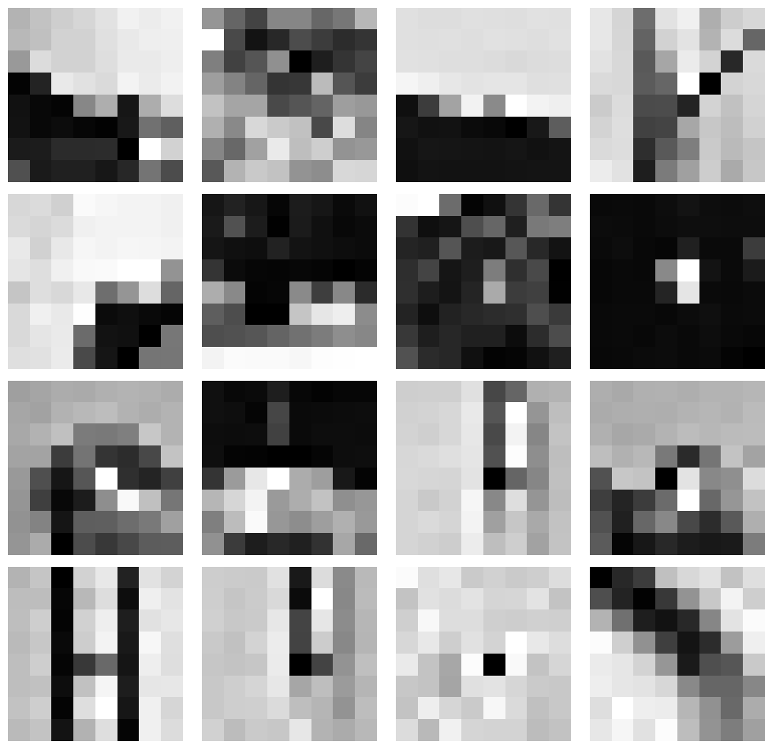
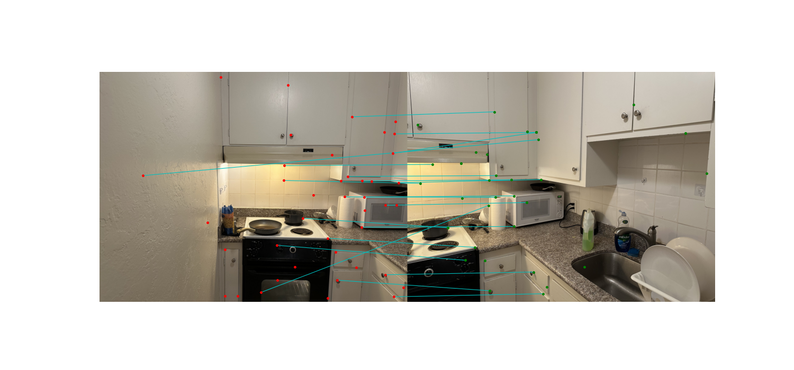

The following images were taken in/from my apartment and at Mosaic Boulders.
To stitch images together, we implement a homography function to recover the transformation between the left and right images. By selecting corresponding points in both images and solving a system of equations, we compute the homography matrix. This matrix allows us to project one image into the coordinate system of the other, aligning them so they appear on the same plane. For example, for the pair of images from apartment shown above, the resulting homography matrix is:
\[ H = \begin{bmatrix} 2.18410571 & -0.23194388 & -2662.939733 \\ 0.40267535 & 1.62936492 & -1111.072452 \\ 0.0002844713 & -0.00007463335 & 1 \end{bmatrix} \]
For each pair of corresponding points \((x, y) \leftrightarrow (x', y')\), the following two equations are added:
\[ \begin{cases} x' = \frac{h_1 x + h_2 y + h_3}{h_7 x + h_8 y + h_9} \\ y' = \frac{h_4 x + h_5 y + h_6}{h_7 x + h_8 y + h_9} \end{cases} \]
Stacking all correspondences gives the linear system in the form:
\[ A \mathbf{h} = 0 \]
where \(\mathbf{h} = [h_1, h_2, h_3, h_4, h_5, h_6, h_7, h_8, h_9]^T\) is the vectorized homography matrix.
For our 8 pairs of points, the explicit \(A\) matrix is:
\[ A = \begin{bmatrix} 3154 & 1967 & 1 & 0 & 0 & 0 & -2548432 & -1589336 & -808 \\ 0 & 0 & 0 & 3154 & 1967 & 1 & -5970522 & -3723531 & -1893 \\ 2672 & 1684 & 1 & 0 & 0 & 0 & -566464 & -357008 & -212 \\ 0 & 0 & 0 & 2672 & 1684 & 1 & -4325968 & -2726396 & -1619 \\ 3054 & 2610 & 1 & 0 & 0 & 0 & -1988154 & -1699110 & -651 \\ 0 & 0 & 0 & 3054 & 2610 & 1 & -7864050 & -6720750 & -2575 \\ 2554 & 1541 & 1 & 0 & 0 & 0 & -332020 & -200330 & -130 \\ 0 & 0 & 0 & 2554 & 1541 & 1 & -3690530 & -2226745 & -1445 \\ 2850 & 1441 & 1 & 0 & 0 & 0 & -1510500 & -763730 & -530 \\ 0 & 0 & 0 & 2850 & 1441 & 1 & -3847500 & -1945350 & -1350 \\ 3232 & 1435 & 1 & 0 & 0 & 0 & -3073632 & -1364685 & -951 \\ 0 & 0 & 0 & 3232 & 1435 & 1 & -4401984 & -1954470 & -1362 \\ 3575 & 3021 & 1 & 0 & 0 & 0 & -4193475 & -3543633 & -1173 \\ 0 & 0 & 0 & 3575 & 3021 & 1 & -10506925 & -8878719 & -2939 \\ 3384 & 1527 & 1 & 0 & 0 & 0 & -3614112 & -1630836 & -1068 \\ 0 & 0 & 0 & 3384 & 1527 & 1 & -4900032 & -2211096 & -1448 \end{bmatrix} \]
Now we warp the images using the previously recovered homography matrix. There are two main methods for mapping pixels from the original image to the warped image:
Nearest Neighbor Interpolation
Each output pixel takes the value of the closest pixel from the original image. This method is simple and fast but can produce blocky artifacts, especially at lower resolutions.
Bilinear Interpolation
Each output pixel is computed as a weighted average of the four nearest pixels from the original image. This produces smoother results and is preferred when visual quality matters, though it is slightly more computationally expensive.
Here are the results:


For the final section of part A, we blend multiple images that share the same center of perspective into a mosaic. To reduce edge artifacts, we use alpha masking. The procedure follows these steps:
Below are the results:


Harris corner detection was used to detect keypoints, but this resulted in dense clusters. To get a more even distribution, We used Adaptive Non-Maximal Suppression (ANMS), which filters the initial points by keeping only those that are far from a significantly stronger corner. In the first image there were 5617 corners found and 500 in the second.

For each corner, there is a feature descriptor to capture the local image structure. This involved extracting a 40x40 window, blurring it, and subsampling it to an 8x8 patch. Each patch was then normalized to be robust against changes in brightness and contrast.

To find corresponding points, I matched feature descriptors between the two images using Euclidean distance. I applied Lowe's ratio test, which rejects ambiguous pairs by comparing the distance of the best match to the second-best match. This filtering step produces a reliable set of correspondences for estimating the image alignment.

To robustly estimate the homography, I implemented a 4-point RANSAC algorithm. This iterative method repeatedly samples four matching pairs, computes a candidate homography, and scores it by counting the number of inlier matches that fit the model. The homography with the largest set of inliers is selected and refined.